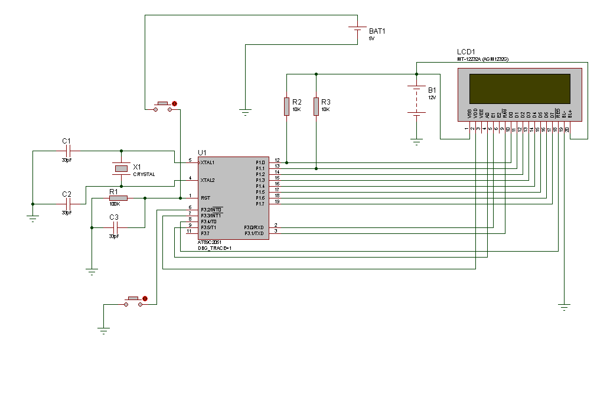

Написание программы (ASM) для MK AT89C2051 для вывода на дисплей MT-12232A изображений.
RPi используется только как инструмент для прошивки МК. В конечном итоге МК должен сам общаться с дисплеем без посторонней помощи.
Схема:

Напряжение: 5V. На схеме может быть указано другое.
На схеме указан дисплей AGM1232G. Используемый в проекте дисплей MT-12232A является аналогом этого.
Также стоит обратить внимание, что пин с МК P3.3 должен быть подключен к пину дисплея CS.
Пин с МК P3.2 подключен к внешней кнопке. В данном примере драйвера не задействован.
Код ASM приложения mktolcd.asm (а также бинарника для записи на МК через программатор) на GIT.
Программа компилятор с ASM в HEX - скачать.
Программа конвертер из HEX в BIN -
скачать.
Файл на выводе необходим для программы прошивки от программатора
PR8051.1
Пример программы на Python3 для прошивки:
Данный пример программы (mktolcd.asm) является простым для изучения. Выводит статическую картинку на дисплей MT-12232A.
По сути является минимальным драйвером работы с дисплеем для прошивки и работы с МК AT89C2051.
Применение внешних прерываний - подключение
Схема:
Напряжение: 5V. На схеме может быть указано другое.
На схеме указан дисплей AGM1232G. Используемый в проекте дисплей MT-12232A является аналогом этого.
Также стоит обратить внимание, что пин с МК P3.3 должен быть подключен к пину дисплея CS.
Обращаем внимание, что пин с МК P3.2 подключен к внешней кнопке. А пин с дисплея A0 подключен к МК P3.5
Применение внешних прерываний - простая игра
Код ASM приложения fastman.asm (а также бинарника для записи на МК через программатор) на GIT.
Далее
В итоге видим, как не хватает ОЗУ - для буфера данных вывода на дисплей.
Далее следует подобрать МК с возможностью работы с внешней памятью (SRAM), а также саму память.
Как варианты: